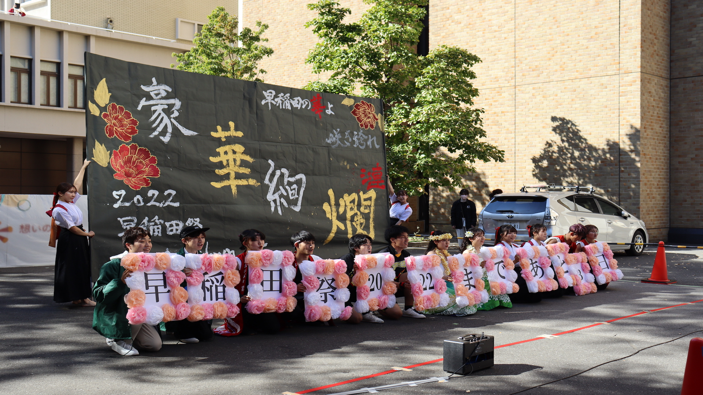

祭前のキャンパスで、早大生を中心とした大学全体に早稲田祭の「訪れ」を告げる企画です。今年度は、早稲田祭直前週の4日間にわたって開催する予定です。普段通りの生活を送る早大生に早稲田祭の片鱗を一足先にお届けすることで、祭への高揚感や期待感を高めます。

戸山キャンパスミルクホール前、11-14号館間、3号館前、大隈講堂前
10月30日(月) 12:20〜13:00（予定）
10月31日(火) 12:20〜13:00（予定）
11月1日(水) 12:20〜13:00（予定）
11月2日(木) 12:20〜13:00（予定）
ブッキング
※企画場所、企画日時は変更の可能性があります。